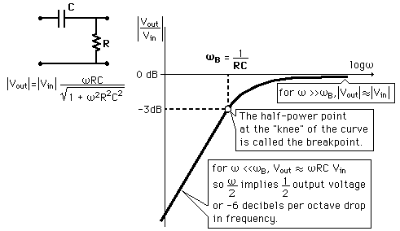

RC High Pass FilterSince capacitive reactance decreases with frequency, the RC circuit shown discriminates against low frequencies. The circuit is an AC voltage divider with an output which falls off at low frequencies at the rate of 6 dB per octave.
|
Index Capacitance concepts Inductance concepts | |||||
| HyperPhysics***** Electricity and Magnetism | Go Back |
RC High Pass Filter Details
|
Index Capacitance concepts Inductance concepts | |||
| HyperPhysics***** Electricity and Magnetism | Go Back |
RC High Pass Filter CalculationSince capacitive reactance decreases with frequency, the RC circuit shown discriminates against low frequencies. The circuit is an AC voltage divider with an output which falls off at low frequencies at the rate of 6 dB per octave.
|
Index Capacitance concepts Inductance concepts | |||||
| HyperPhysics***** Electricity and Magnetism | Go Back |